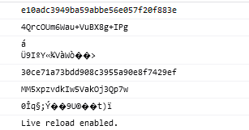
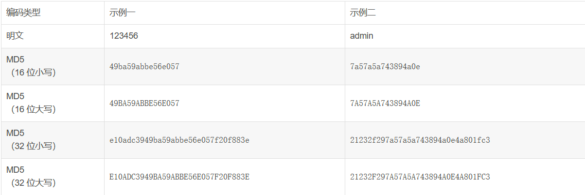
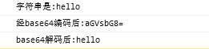
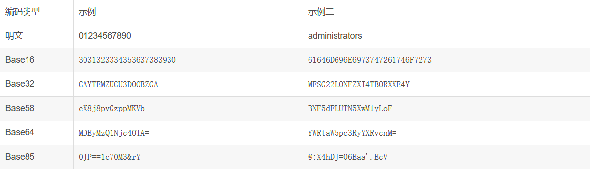
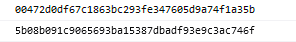
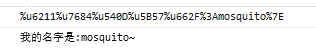
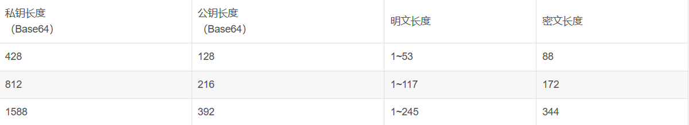

常用的加密算法_不可逆加密算法
对称加密和非对称加密的区别
识别密文方式
常用 URL 特殊字符的转义_%2f 转义
Enctypt() 这个函数很关键，一般来说加密方法里面都会有这个单词
加密是通过某种算法将原本的数据内容加密为特殊的参数
，网上也有很多自称是可以破解 MD5 密码的网站，其原理也是一样，就是有一个巨大的资源库，存放了许多字符串及对应的 MD5 加密后的字符串，通过你输入的 MD5 加密串来进行比较，如果过你的密码复杂度比较低，还是有很大机率验证出来的
加密方式
1
2
3
4
5
| Md5加密: 通过md5加密会生成一个16位或者32位的加密参数 特征: 16位或32位 不可逆
对称加密DES/AES两个: 就是加密和解密用的是同一把钥匙 特征: 秘加密解密钥匙唯一 可逆
非对称加密RSA: 有加密公匙和解密私匙 特征: 加密解密钥匙不唯一 可逆
Base64伪加密: 将数据以另外一种编码方式呈现 特征: 表示真正的加密算法 可逆
|
# MD5 (不可逆向需要 Key)
MD5.js 是通过前台 js 加密的方式对用户信息，密码等私密信息进行加密处理的工具，也可称为插件
MD5 共有 6 种加密方法：
hex_md5(value)b64_md5(value)str_md5(value)
HMAC 消息认证码，就是最后加密完成的数据
hex_hmac_md5(key, data)b64_hmac_md5(key, data)str_hmac_md5(key, data)
1
2
3
4
5
6
7
8
9
10
11
12
13
14
15
16
17
18
19
20
21
22
23
24
25
26
27
28
29
30
| <!DOCTYPE html>
<html lang="en">
<head>
<meta charset="UTF-8">
<meta http-equiv="X-UA-Compatible" content="IE=edge">
<meta name="viewport" content="width=device-width, initial-scale=1.0">
<title>Document</title>
<script src="./md5.js"></script>>
</head>
<body>
<p>你好世界</p>
<script>
var code = "123456";
var username = "123456";
var password = "123456";
var str1 = hex_md5("123456");
var str2 = b64_md5("123456");
var str3 = str_md5("123456");
var str4 = hex_hmac_md5(code,code);
var str5 = b64_hmac_md5(username,username);
var str6 = str_hmac_md5(password,password);
console.log(str1);
console.log(str2);
console.log(str3);
console.log(str4);
console.log(str5);
console.log(str6);
</script>
</body>
</html>
|

# 判断方式
- 密文一般为 16 位或者 32 位，其中 16 位是取的 32 位第 9~25 位的值；
- 组成方式为字母
(a-f） 和数字（0-9）混合，字母可以全部是大写或者小写。
除了通过密文特征来判断以外，我们还可以搜索源代码，标准 MD5 的源码里是包含了一些特定的值的，没有这些特定值，就无法实现 MD5：
0123456789ABCDEF 、 0123456789abcdef1732584193 、 -271733879 、 -1732584194 、 271733878
PS：某些特殊情况下，密文的长度也有可能不止 16 位或者 32 位，有可能是在官方算法上有一些魔改，通常也是在 16 位的基础上，左右填充了一些随机字符串。

# Base64 编码转换 (可逆)
Base64 使用了 64 个可打印字符（A-Z、a-z、0-9、+、/）Base16 使用了 16 个可打印字符（A-F、0-9）
下列代码可以将普通的字符串通过方法转换为 Base64 编码的数字
1
2
3
4
5
6
7
8
9
10
11
12
13
14
| <html>
<head>
<title>前端的base64使用方法</title>
</head>
<body>
</body>
<script>
var str = "hello";
var str64 = window.btoa("hello");
console.log("字符串是:"+str);
console.log("经base64编码后:"+str64);
console.log("base64解码后:"+window.atob(str64));
</script>
</html>
|

# 判断方式
Base 编码系统特征如下
Base16：结尾没有等号，数字要多于字母；
Base32：字母要多于数字，明文数量超过 10 个，结尾可能会有很多等号；
Base58：结尾没有等号，字母要多于数字；
Base64：一般情况下结尾都会有 1 个或者 2 个等号，明文很少的时候可能没有；
Base85：等号一般出现在字符串中间，含有一些奇怪的字符；
Base100：密文由 Emoji 表情组成

# sha1 （不可逆
哈希算法
SHA1（英语：Secure Hash Algorithm 1，中文名：安全散列算法 1）是一种密码散列函数，美国国家安全局设计，并由美国国家标准技术研究所（NIST）发布为联邦数据处理标准（FIPS）。SHA-1 可以生成一个被称为消息摘要的 160 位（20 字节）散列值，散列值通常的呈现形式为 40 个十六进制数。
SHA256 是 SHA2 的一种，可产生 256 位的哈希值，较 SHA1 更加的安全
1
2
3
4
5
6
7
8
9
10
11
12
13
14
15
16
17
18
19
20
21
22
| <!DOCTYPE html>
<html lang="en">
<head>
<meta charset="UTF-8">
<meta http-equiv="X-UA-Compatible" content="IE=edge">
<meta name="viewport" content="width=device-width, initial-scale=1.0">
<title>sha1</title>
<script src="https://cdn.bootcss.com/js-sha1/0.6.0/sha1.js"></script>
</head>
<body>
<p>sha1加解密</p>
<script type="text/javascript">
var sha1_1 = sha1("mosquito~");
console.log(sha1_1);
var sha1_2 = sha1("admin:1001");
console.log(sha1_2);
</script>
</body>
</html>
|

# 编码 / 解码字符串原生函数
使用 JS 函数的 escape() 和 unescape() 分别是编码和解码字符串
1
2
3
4
5
6
7
8
9
10
11
12
13
14
15
16
17
18
19
20
21
| <!DOCTYPE html>
<html lang="en">
<head>
<meta charset="UTF-8">
<meta http-equiv="X-UA-Compatible" content="IE=edge">
<meta name="viewport" content="width=device-width, initial-scale=1.0">
<title>sha1</title>
</head>
<body>
<p>编码解码字符串</p>
<script type="text/javascript">
var escape1 =escape("我的名字是:mosquito~");
console.log(escape1);
var unescape1 = unescape(escape1);
console.log(unescape1);
</script>
</script>
</body>
</html>
|

# 对称加密 AES/DES 唯一 可逆需要 key
对称加密算法只是为了区分非对称加密算法。其中鲜明的特点是对称加密是加密解密使用相同的密钥，而非对称加密加密和解密时使用的密钥不一样 对称就是相同的，不对称就是不唯一的 各有优点
使用场景
对于大部分情况我们都使用对称加密，而对称加密的密钥交换时使用非对称加密，这有效保护密钥的安全。非对称加密加密和解密密钥不同，那么它的安全性是无疑最高的，但是它加密解密的速度很慢，不适合对大数据加密。而对称加密加密速度快，因此混合使用最好
- AES: 高级加密标准，新一代标准，加密速度更快，安全性更高（不用说优先选择）
- DES：比较老的算法，一共有三个参数入口（原文，密钥，加密模式）。而 3DES 只是 DES 的一种模式，是以 DES 为基础更安全的变形，对数据进行了三次加密，也是被指定为 AES 的过渡算法
# AES 的使用
AES 密钥长度可以选择 128 位【16 字节】，192 位【24 字节】和 256 位【32 字节】密钥（其他不行，因此别乱设密码哦）
AES 支持五种模式：CBC，CFB，ECB，OFB，PCBC，
1
2
3
4
5
| ECB：是一种基础的加密方式，密文被分割成分组长度相等的块（不足补齐），然后单独一个个加密，一个个输出组成密文。
CBC：是一种循环模式，前一个分组的密文和当前分组的明文异或操作后再加密，这样做的目的是增强破解难度。
CFB/OFB实际上是一种反馈模式，目的也是增强破解的难度。
ECB和CBC的加密结果是不一样的，两者的模式不同，而且CBC会在第一个密码块运算时加入一个初始化向量
|
Java 语言实现 AES 算法的加解密 ：
键盘录入需要录入的规则是加密时使用的密钥，也就是加密规则。加密规则需要和解密时使用的密钥相同，否则无法正确解密。因此，加密规则和解密规则之间非常重要。在实际应用中，加密规则需要保密，只有知道加密规则的人才能正确解密
注意:
如果攻击者能够获取加密使用的密钥，就可以通过逆向分析得出加密的规则，从而破解加密。因此，在实际应用中，加密规则需要保密，只有知道加密规则的人才能正确解密。同时，还需要采取其他安全措施，如加密传输通道、使用安全的存储方式等，以保护加密数据的安全。
1
2
3
4
5
6
7
8
9
10
11
12
13
14
15
16
17
18
19
20
21
22
23
24
25
26
27
28
29
30
31
32
33
34
35
36
37
38
39
40
41
42
43
44
45
46
47
48
49
50
51
52
53
54
55
56
57
58
59
60
61
62
63
64
65
66
67
68
69
70
71
72
73
74
75
76
77
78
79
80
81
82
83
84
85
86
87
88
89
90
91
92
93
94
95
96
97
98
99
100
101
102
103
104
105
106
107
108
109
110
111
112
113
114
115
116
117
118
119
120
121
122
123
124
125
126
127
128
129
130
131
132
133
134
135
136
137
138
139
140
141
142
143
144
145
146
147
148
149
150
151
152
153
154
155
156
| import java.io.IOException;
import java.io.UnsupportedEncodingException;
import java.security.InvalidKeyException;
import java.security.NoSuchAlgorithmException;
import java.security.SecureRandom;
import java.util.Base64;
import java.util.Scanner;
import javax.crypto.BadPaddingException;
import javax.crypto.Cipher;
import javax.crypto.IllegalBlockSizeException;
import javax.crypto.KeyGenerator;
import javax.crypto.NoSuchPaddingException;
import javax.crypto.SecretKey;
import javax.crypto.spec.SecretKeySpec;
import sun.misc.BASE64Decoder;
import sun.misc.BASE64Encoder;
public class RSAUtil {
public static String AESEncode(String encodeRules, String content) {
try {
KeyGenerator keygen = KeyGenerator.getInstance("AES");
keygen.init(128, new SecureRandom(encodeRules.getBytes()));
SecretKey original_key = keygen.generateKey();
byte[] raw = original_key.getEncoded();
SecretKey key = new SecretKeySpec(raw, "AES");
Cipher cipher = Cipher.getInstance("AES");
cipher.init(Cipher.ENCRYPT_MODE, key);
byte[] byte_encode = content.getBytes("utf-8");
byte[] byte_AES = cipher.doFinal(byte_encode);
String AES_encode = new String(new BASE64Encoder().encode(byte_AES));
return AES_encode;
} catch (NoSuchAlgorithmException e) {
e.printStackTrace();
} catch (NoSuchPaddingException e) {
e.printStackTrace();
} catch (InvalidKeyException e) {
e.printStackTrace();
} catch (IllegalBlockSizeException e) {
e.printStackTrace();
} catch (BadPaddingException e) {
e.printStackTrace();
} catch (UnsupportedEncodingException e) {
e.printStackTrace();
}
return null;
}
public static String AESDncode(String encodeRules, String content) {
try {
KeyGenerator keygen = KeyGenerator.getInstance("AES");
keygen.init(128, new SecureRandom(encodeRules.getBytes()));
SecretKey original_key = keygen.generateKey();
byte[] raw = original_key.getEncoded();
SecretKey key = new SecretKeySpec(raw, "AES");
Cipher cipher = Cipher.getInstance("AES");
cipher.init(Cipher.DECRYPT_MODE, key);
byte[] byte_content = new BASE64Decoder().decodeBuffer(content);
byte[] byte_decode = cipher.doFinal(byte_content);
String AES_decode = new String(byte_decode, "utf-8");
return AES_decode;
} catch (NoSuchAlgorithmException e) {
e.printStackTrace();
} catch (NoSuchPaddingException e) {
e.printStackTrace();
} catch (InvalidKeyException e) {
e.printStackTrace();
} catch (IOException e) {
e.printStackTrace();
} catch (IllegalBlockSizeException e) {
e.printStackTrace();
} catch (BadPaddingException e) {
e.printStackTrace();
}
return null;
}
public static void main(String[] args) {
RSAUtil jm = new RSAUtil();
Scanner scanner = new Scanner(System.in);
System.out.println("使用AES对称加密，请输入加密的规则");
String encodeRules = scanner.next();
System.out. println ("请输入要加密的内容:");
String content = scanner.next();
System.out.println("根据输入的规则" + encodeRules + "加密后的密文是:"
+ jm.AESEncode(encodeRules, content));
System.out.println("使用AES对称解密，请输入加密的规则：(须与加密相同)");
encodeRules = scanner.next();
System.out.println("请输入要解密的内容（密文）:");
content = scanner.next();
System.out.println("根据输入的规则" + encodeRules + "解密后的明文是:"
+ jm.AESDncode(encodeRules, content));
}
}
------------------------------------------------------
输出:
使用AES对称加密，请输入加密的规则
zhang
请输入要加密的内容:
123
根据输入的规则zhang加密后的密文是:JXHBwSB8AAspwb5k4YvExQ==
使用AES对称解密，请输入加密的规则：(须与加密相同)
zhang
请输入要解密的内容（密文）:
JXHBwSB8AAspwb5k4YvExQ==
根据输入的规则zhang解密后的明文是:123
|
# DES 的使用
DES 是对称加密算法领域中的典型算法，其密钥默认长度为 56 位
# 非对称 RSA 加密 不唯一 可逆
JS 中没有私钥是无法解密的，只能通过公钥去加密结果
非对称加密加密解密时使用的不同的密钥，分为公钥（public key）和私钥 (private key). 公钥可以公开，而私钥自己保存，通过公钥加密结果，必须私钥解密
由于非对称加密的密钥生成麻烦，所以无法做到一次一密，而且其加密速度很慢，无法对大量数据加密。因此最常用的使用场景就是数字签名和密码传输，用作数字签名时使用私钥加密，公钥解密；用作加密解密时，使用公钥加密，私钥解密
长度要求:
RSA 加密是有长度限制的，1024 位密钥可以加密 128 字节（1024 位），不满 128 字节的使用随机数填充，但是 RSA 实现中必须要加随机数（11 字节以上），所以明文长度最大为 117 字节，然后剩下的加入随机数。这也产生了每次加密结果每一次都不一样的特点
下方是 Java 实现该 RSA 算法，最底部字符串我们可以自行选择，先是生成密钥对，然后加密，再解密。需要注意的是这个方法是不能跨语言使用的，因为里面对公钥和私钥用到的序列化是 java 的序列化。 由于加密后的密文都是字节码形式的，我们要以字符串方式保存或传输的话，可以使用 Base64 编码
1
2
3
4
5
6
7
8
9
10
11
12
13
14
15
16
17
18
19
20
21
22
23
24
25
26
27
28
29
30
31
32
33
34
35
36
37
38
39
40
41
42
43
44
45
46
47
48
49
50
51
52
53
54
55
56
57
58
59
60
61
62
63
64
65
66
67
68
69
70
71
72
73
74
75
76
77
78
79
80
81
82
83
84
85
86
87
88
89
90
91
92
93
94
95
96
97
98
99
100
101
102
103
104
| import com.sun.org.apache.xerces.internal.impl.dv.util.Base64;
import javax.crypto.Cipher;
import java.io.FileInputStream;
import java.io.FileOutputStream;
import java.io.ObjectInputStream;
import java.io.ObjectOutputStream;
import java.security.Key;
import java.security.KeyPair;
import java.security.KeyPairGenerator;
import java.security.SecureRandom;
public class RSAUtil {
private static String ALGORITHM = "RSA";
private static String ALGORITHM_MODEL = "RSA/ECB/PKCS1Padding";
private static int KEYSIZE = 1024;
private static String PUBLIC_KEY_FILE = "PublicKey";
private static String PRIVATE_KEY_FILE = "PrivateKey";
private static void generateKeyPair() throws Exception {
SecureRandom sr = new SecureRandom();
KeyPairGenerator kpg = KeyPairGenerator.getInstance(ALGORITHM);
kpg.initialize(KEYSIZE, sr);
KeyPair kp = kpg.generateKeyPair();
Key publicKey = kp.getPublic();
Key privateKey = kp.getPrivate();
ObjectOutputStream oos1 = new ObjectOutputStream(new FileOutputStream(
PUBLIC_KEY_FILE));
ObjectOutputStream oos2 = new ObjectOutputStream(new FileOutputStream(
PRIVATE_KEY_FILE));
oos1.writeObject(publicKey);
oos2.writeObject(privateKey);
oos1.close();
oos2.close();
}
public static byte[] encrypt(String source) throws Exception {
ObjectInputStream ois = new ObjectInputStream(new FileInputStream(
PUBLIC_KEY_FILE));
Key key = (Key) ois.readObject();
ois.close();
Cipher cipher = Cipher.getInstance(ALGORITHM_MODEL);
cipher.init(Cipher.ENCRYPT_MODE, key);
byte[] b = source.getBytes();
byte[] b1 = cipher.doFinal(b);
return b1;
}
public static String decrypt(byte[] cryptograph) throws Exception {
ObjectInputStream ois = new ObjectInputStream(new FileInputStream(
PRIVATE_KEY_FILE));
Key key = (Key) ois.readObject();
Cipher cipher = Cipher.getInstance(ALGORITHM_MODEL);
cipher.init(Cipher.DECRYPT_MODE, key);
byte[] b = cipher.doFinal(cryptograph);
return new String(b);
}
public static void main(String[] args) throws Exception {
generateKeyPair();
String source = "邓鹏伟";
System.out.println("加密的字符串为"+source);
byte[] cryptograph = encrypt(source);
System.out.println(new String(Base64.encode(cryptograph)));
String target = decrypt(cryptograph);
System.out.println(target);
}
}
------------------------------------------------------
输出:
加密的字符串为123
axejk/TwfbNQAB9dNlbu3x5bJl7l7bQmEvk1hbi+iV/ZseZOMEZdVpB2kgXYvACI9N8VMjW6+m13q14bRdhkrmwiP6fjVv85af+dc/gk5Jph1MB6nYey/8ZhWZI6VowH4OBncZX33kzomvwxycQfUXLM/yDGxM6neYt8PaIbtaQ=
123
|
# 判断方式
在网站中通常使用 JSEncrypt 库来实现，其最大的特征就是有一个设置公钥的过程，我们可以通过以下方法来快速初步判断是否为 RSA 算法
- 搜索关键词
new JSEncrypt() ， JSEncrypt 等，一般会使用 JSEncrypt 库，会有 new 一个实例对象的操作 - 搜索关键词
setPublicKey 、 setKey 、 setPrivateKey 、 getPublicKey 等，一般实现的代码里都含有设置密钥的过程。
RAS 的私匙 公匙 明文 密文 也有一一对应的关系
